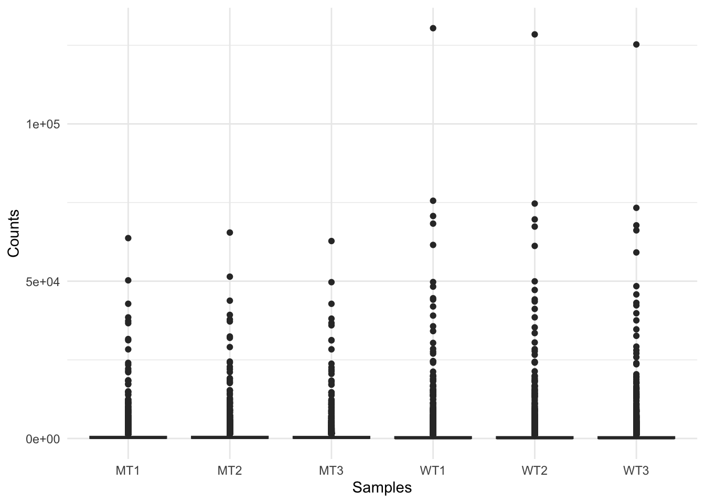
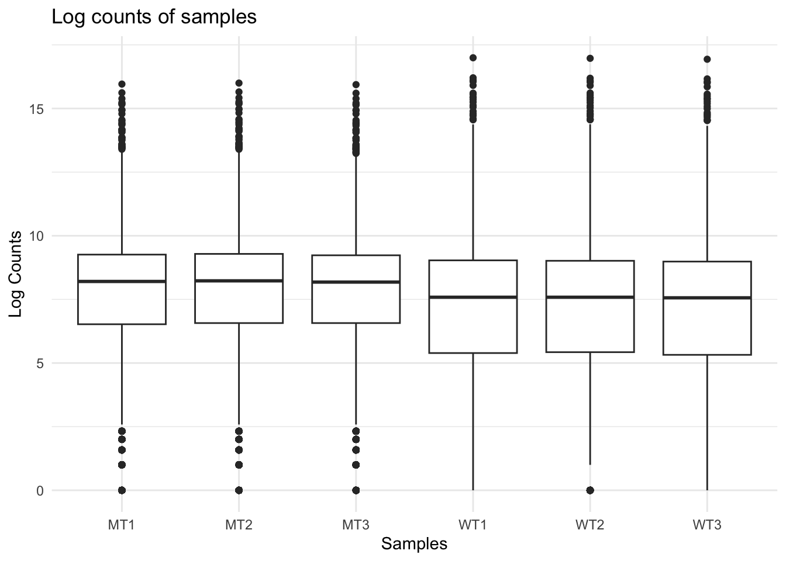
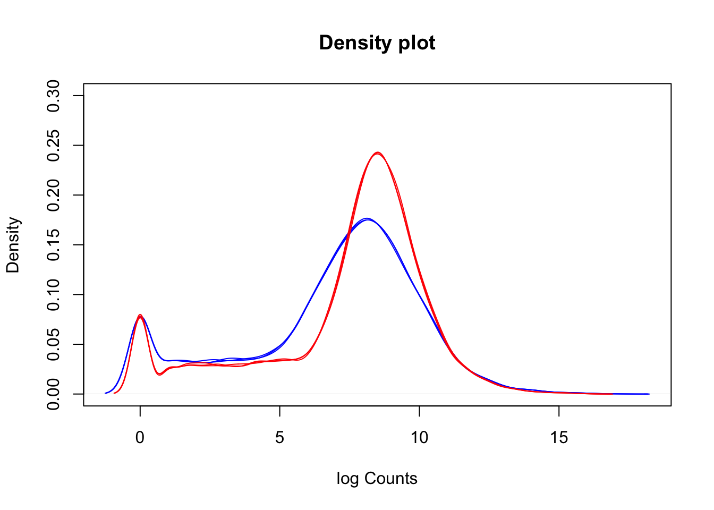
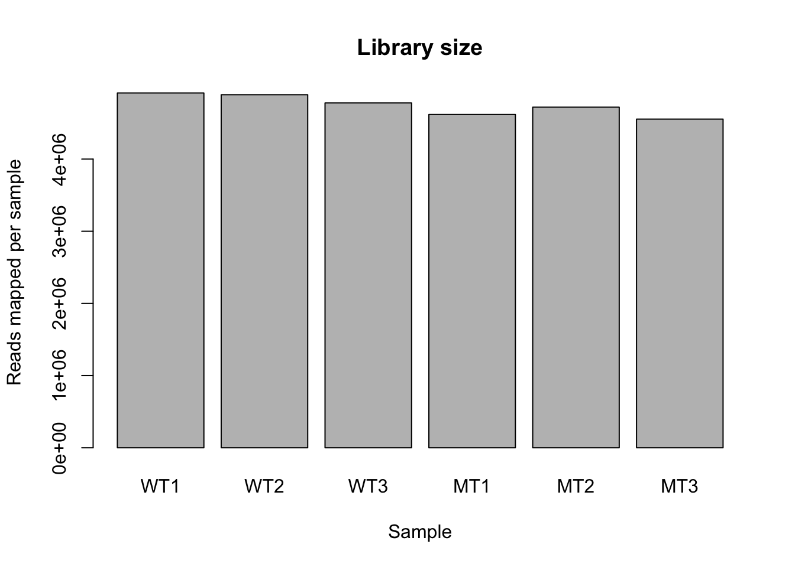

library(dplyr)
library(ggplot2)
library(tidyr)Exploratory Analysis

Exploratory analysis will cover basic visualisations and characterisations of the data as well as any initial transformations (e.g., library size) required before we move on to identifying differentially expressed genes.
What is exploratory analysis and why is it necessary?
Exploratory analysis is looking at the data. You are attempting to get a sense of what the data looks like, to notice outliers or issues (e.g., hey isn’t it weird that one of my wt samples groups with all the mutant samples, and one of the mut samples groups with the wt samples? I wonder what’s happening there?).
If your data set was a physical problem (like a squeaky wheel or a well wrapped present) you’d physically explore it (pick it up, is it heavy, do I shake it?). Exploratory analysis is the data science equivalent.
Exploratory analysis
From here and for the rest of the workshop, we will be working within R. Use the import data set or read.delim() function to import the file yeast_counts_all_chr, and name the object fcData. Also, load the dplyr library. We will look at some of the basic stats and features of our data object with View(), dim(), and names()
Run the code below to load the file.
fcData <- read.delim("~/RNA_seq/yeast_counts_all_chr.txt", comment.char="#")
Extra for experts: making this work in the background
As this workshop is written in Quarto, which requires all code to work upon render, below I have actually loaded in the fcData directly from the GA GitHub. This keeps it computer agnostic–anyone anywhere can run this code and pull in the data from GitHub. In this workshop this is unnecessary–the dataset is already on the server.
fcData <- read.delim("https://raw.githubusercontent.com/GenomicsAotearoa/RNA-seq-data-analysis-workflow/main/data/yeast_counts_all_chr.txt", comment.char="#")Now that the data is loaded in in the background, we can continue with exploring the data!
Explore the data:
fcData %>% head() Geneid Chr Start End Strand Length ...STAR.SRR014335.Aligned.out.sam
1 YDL248W IV 1802 2953 + 1152 52
2 YDL247W-A IV 3762 3836 + 75 0
3 YDL247W IV 5985 7814 + 1830 2
4 YDL246C IV 8683 9756 - 1074 0
5 YDL245C IV 11657 13360 - 1704 0
6 YDL244W IV 16204 17226 + 1023 6
...STAR.SRR014336.Aligned.out.sam ...STAR.SRR014337.Aligned.out.sam
1 46 36
2 0 0
3 4 2
4 0 1
5 3 0
6 6 5
...STAR.SRR014339.Aligned.out.sam ...STAR.SRR014340.Aligned.out.sam
1 65 70
2 0 1
3 6 8
4 1 2
5 5 7
6 20 30
...STAR.SRR014341.Aligned.out.sam
1 78
2 0
3 5
4 0
5 4
6 19names(fcData) [1] "Geneid" "Chr"
[3] "Start" "End"
[5] "Strand" "Length"
[7] "...STAR.SRR014335.Aligned.out.sam" "...STAR.SRR014336.Aligned.out.sam"
[9] "...STAR.SRR014337.Aligned.out.sam" "...STAR.SRR014339.Aligned.out.sam"
[11] "...STAR.SRR014340.Aligned.out.sam" "...STAR.SRR014341.Aligned.out.sam"To help with our future data analysis, let’s rename the column names for the samples.
names(fcData)[7:12] <- c("WT1", "WT2", "WT3", "MT1", "MT2", "MT3")
fcData %>% head() Geneid Chr Start End Strand Length WT1 WT2 WT3 MT1 MT2 MT3
1 YDL248W IV 1802 2953 + 1152 52 46 36 65 70 78
2 YDL247W-A IV 3762 3836 + 75 0 0 0 0 1 0
3 YDL247W IV 5985 7814 + 1830 2 4 2 6 8 5
4 YDL246C IV 8683 9756 - 1074 0 0 1 1 2 0
5 YDL245C IV 11657 13360 - 1704 0 3 0 5 7 4
6 YDL244W IV 16204 17226 + 1023 6 6 5 20 30 19That already looks much better. Now, let’s split out the count data, removing the annotation (e.g., Chr, Start, End) columns and adding Geneid back into the object as the row names. Having the geneid as rownames is much easier than having that data as a column. Save a copy of this counts object for loading later.
counts = fcData[,7:12]
rownames(counts) <- fcData$Geneid
counts %>% head() WT1 WT2 WT3 MT1 MT2 MT3
YDL248W 52 46 36 65 70 78
YDL247W-A 0 0 0 0 1 0
YDL247W 2 4 2 6 8 5
YDL246C 0 0 1 1 2 0
YDL245C 0 3 0 5 7 4
YDL244W 6 6 5 20 30 19save(counts, file = "counts.RData")This is a very basic, very ‘clean’ R object. We can see our sample names, gene names and counts easily. It is entirely possible to use this object for the rest of our analysis - and that’s what we will do today, for the sake of simplicity. This object is easy to interact with and is easy to mentally visualise and conceptualise.
Summarised experiment objects - a special complex object type in R for biologists
It’s worth noting that many newer R packages and workflows will require (or at least strongly encourage) you to use a “summarised experiment object”. If a vector is a one-dimensional data storage object, and a matrix is a two-dimensional data storage object, you can think of a summarised experiment object as a three-dimensional way of storing data. In a summarised experiment object where you have the genes on the y axis and the samples on the x axis with counts as the observations, the z axis could be a second matrix storing different observations. Summarised experiment objects can stack multiple data types in this way and build up a complex (but tidy) array of data. Summarised experiment objects are powerful but can be harder to mentally conceptualise and require more complex code to interact with the data they store.
Summarised experiment objects are covered in the Carpentries Introduction to Data Analysis with R workshop.

Remove non-expressed genes (optional)
If you are working in a complex organism, many genes will not be expressed in all tissue types. It can be worth checking to see how many genes have zero (or e.g., < 5) counts and opting to remove these from your data object.
How many genes have counts of zero? How many genes have fewer than e.g., 5 counts?
colSums(counts == 0)WT1 WT2 WT3 MT1 MT2 MT3
562 563 573 437 425 435 # WT1 WT2 WT3 MT1 MT2 MT3
# 562 563 573 437 425 435 Because our zeros are not a massive part of the data (i.e., here they are < 10% of the data), we will not remove them. However, they are worth noting because later we will consider logging our data, and zeros will cause an issue.
Visualising our data set
# Convert counts data to long format for ggplot
counts_long <- counts %>%
as.data.frame() %>%
tibble::rownames_to_column("Gene") %>%
tidyr::pivot_longer(cols = -Gene, names_to = "Sample", values_to = "Counts")
# Create boxplot with ggplot2
ggplot(counts_long, aes(x = Sample, y = Counts)) +
geom_boxplot() +
labs(x = "Samples", y = "Counts") +
theme_minimal()
This figure indicates we should consider logging our data (for the purpose of visualisations).
Log transform the data, adding 1 to avoid log(0) errors.
logCounts = log2(as.matrix(counts) + 1)
# Convert log-transformed counts to long format for ggplot
logCounts_long <- logCounts %>%
as.data.frame() %>%
tibble::rownames_to_column("Gene") %>%
tidyr::pivot_longer(cols = -Gene, names_to = "Sample", values_to = "LogCounts")
# Create log counts boxplot with ggplot2
ggplot(logCounts_long, aes(x = Sample, y = LogCounts)) +
geom_boxplot() +
labs(x = "Samples", y = "Log Counts", title = "Log counts of samples") +
theme_minimal()
The log count boxplots reveal a difference between our wt and mutant samples. As a reminder, these two strains of yeast are very different and we would not normally expect this level of difference (although that might vary depending on your experiment).
We can use density plots as another way to visualise differences between our two sample groups. First, create an object called lineColour which will colour our wt samples blue and our mutant samples red. Then create a density plot for the first sample, and use a loop to density lines for the remaining samples onto the plot.
lineColour = c("blue", "blue", "blue", "red", "red", "red")
lineColour[1] "blue" "blue" "blue" "red" "red" "red" plot(density(logCounts[,1]), ylim=c(0,0.3), col=lineColour[1], xlab = "log Counts", main = "Density plot")
for(i in 2:ncol(logCounts)) lines(density(logCounts[,i]), col=lineColour[i])
A common question to ask at this point is, are the differences we can see between our two sample groups a true biological effect, or is this an experimental artifact? Often, we will not know the answer to this question. For now, it is enough to be aware of these differences and to keep them in mind moving forward.
Library size
Library size refers to the total number of reads for the entire sample. If two samples have vastly different library sizes, genes would look differentially expressed between samples e.g., if one library was twice as large as another, all genes would look to be upregulated in the larger library sample. Before we compare counts across samples we need to check whether the library sizes are approximately similar, and if they are not, make a correction to account for the size differences.
colSums(counts) %>% barplot(., ylab = "Reads mapped per sample", xlab = "Sample", main = "Library size")
Library sizes are approximately equal across the samples. They are slightly lower in the mutants compared to the wt, but the difference is low (i.e., mean ~ 4.6 million and 4.8 million reads in mutant and wt respectively).
If we needed to correct for library size, we would use a two-step method. In the first step we calculate a sample-specific value called a size factor. If we take the raw read counts and divide by the size factor for each sample, the resulting values would be similar for all samples. The way in which size factors are implemented will differ depending on the analysis method used. For some methods the size factor must be manually used to correct for library sizes. For other methods (e.g., DESeq2, which we will use shortly) automatically estimates size factors and implements them into the differential gene expression analysis workflow.
Heteroskedasticity
Heteroskedasticity is “heterogeneity of variance”. If the variance we observe is non-uniform across a range of values, we can describe the dataset as heteroskedastic. In RNA-seq, this means that variance depends on the mean expression of the gene. Wikipedia has a useful example:
“A classic example of heteroscedasticity is that of income versus expenditure on meals. A wealthy person may eat inexpensive food sometimes and expensive food at other times. A poor person will almost always eat inexpensive food. Therefore, people with higher incomes exhibit greater variability in expenditures on food.”
Exercise:
Given the above example, do you expect genes with higher expression to have higher or lower variance than genes with low expression? That is, which will have higher variance - genes with high average expression or genes with low average expression?
Solution
This can be a surprisingly complex question to answer, and depends on how we think about variance. If a gene has a high mean expression (e.g., say 1000), then we can expect that the standard deviation will be a reasonably high number (e.g., let’s say 20). If a gene has low mean expression (e.g., 10), then the standard deviation will be small (e.g., 2). So, it is true to say that for genes with higher average expression, the standard deviation is greater.
However, we also need to think about magnitude of variance, which we can do using the numbers from our above imaginary examples. For the gene with a mean expression of 1000 and sd of 20, going from 1000 to 1020 is not a big change (i.e., 1.02 fold change). For the gene with the low mean expression, going from 10 to 12 is a large change (i.e., 1.2 fold change).
Our assumption then is that a large fold change, regardless of the actual read count change for that gene, has a meaningful biological effect.
This write-up gives an in-depth explanation of heteroskedasticity and how we can think about it.
We will look more at heteroskedasticity when we begin to identify differentially expressed genes, but for now it is important to be aware of the concept.